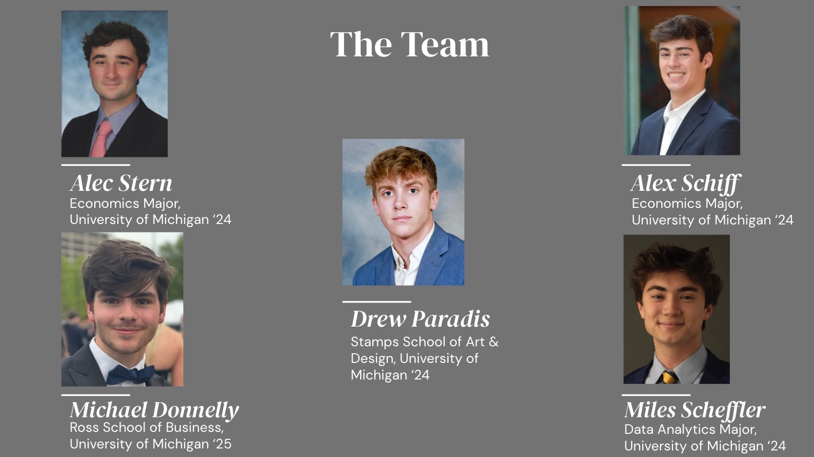

Who Are We?
Have you ever questioned why canned drinks are always in a cylindrical format? So have we. Founded by five students at the University of Michigan, SQR Inc. aims to alleviate the monotony of drinking out of a cylindrical can. Beer and seltzer drinkers alike can now spice up their nights by picking up a pack of SQR. With SQR's quadrilateral footprint (that still fits in traditional cup holders!), expect to be approached by endless individuals curious about the future of canned beverages. Through our modernized design process, SQR Inc. aims to always remain up-to-date on the latest drink consumption trends and technology.
